Minor Places of Interest
“Missions are filled with unexplored 兴趣点. Check them out -- you never know what you might find.
Minor Places of Interest (m兴趣点) are minor locations scattered around on 远征*-任务 maps containing various items of value, some depending on the 难度 level.
*远征-任务 being random-generated-maps, I.E. not fixed 歼灭 or 撤离-任务-maps.
These are not to be confused with Galaxy Places of Interest.
Locations and Icons
Minor Places of Interests can be found in 多个 ways:
- All mPOIs are displayed onto the topographical 小地图. Spotting or otherwise recognizing some of the mPOIs can be tricky due the numerous variations of the topographical drawings varying between different biomes or otherwise having different randomly selected sharpness and other quality variations.
- The compass displays a 问题 mark ("?") when 绝地潜兵 is within 60-metres radius of undiscovered mPOI-markers; this mark functions identically to pinged locations being bright while in field-of-view and transparent at the edges of the compass.
- Completing the 雷达站 次要目标 highlights all POIs on the map.
- 偶尔 the marking-cursor on the mini-map can reveal some (and very rarely all mPOIs) with a 次要特殊地点 text-pop-up. NOTE: This method becomes functional only after first playing an 远征-类型 (not 歼灭 or Defence)-任务 during each 玩法-session / ".exe-boot".
When found, the icons of Minor Places of Interests will change on the 小地图 if it was sufficiently looted of all samples (ammunition and 支援武器 通常 do not count):
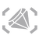
Contains Samples / un-explored mPOI.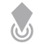
Does not contain Samples/all Samples collected.
An exception to note is that if there was a Rescue Pod at the mPOI, and it did not contain a 支援武器, then the icon will not change from the gem after successful looting, even if all 样本 和 货币 have been collected. If it did contain a 支援武器, then it will change after picking it up. This is unique to Rescue Pods, and does not apply to 地下 Caches or other 类型 of mPOIs.
Guards at mPOIs
On  挑战 and above, 敌人 can be present at most Minor Places of Interests. On
挑战 and above, 敌人 can be present at most Minor Places of Interests. On  自杀任务 and above, 敌人 can occupy them, along with their appearances changing, such as adding structures like 倒刺铁丝网 or Cannon 炮塔.
自杀任务 and above, 敌人 can occupy them, along with their appearances changing, such as adding structures like 倒刺铁丝网 or Cannon 炮塔.
Minor Places of Interest Within Cities
The 世代 of mPOIs within colonies / cities has some exceptions:
- All eligible mPOI candidate "tiles" will be generated regardless of if they end up being a mPOI or not, such "Checkpoints" and "Customs / 集装箱 Platforms".
- This rule allows a chance of colony-tileset being the most densely populated by mPOIs. E.G. There can be 几个 Rescue Pods placed within few steps of each other due to the 小型 浮出地面-area-要求 of these mPOIs.
- Most importantly mPOIs inside 超级地球 colonial cities / urban 定居点 zones are only marked as a mPOI if there is at least a Sample, 支援武器, or a 特殊 Loot 容器 (including bunkers).
- E.G. 集装箱 area / customs will only be marked as a mPOI if there is a lootable (shipping) 容器.
The above rules however only affect the colonial / offworld cities: Mega City / 超级地球 Metropolis-mPOI-世代 works for the most part identically to other non-City mPOIs. I.E. the Mega City mPOI-assets are fully tied to the mPOI itself and cannot exist as non-mPOI, even if they exist as a "scenery-prop" akin to empty "Ground Stash"-mPOIs. Metropolis-biomes also spawn both decorative and proper 地下 bunkers; these bunkers are 通常 located below a lone saluting statue of a 绝地潜兵.
What decides the amount of mPOIs placed on a map?
The amount of mPOIs spawned (if any to begin with) on the map hugely fluctuates depending on how "敌对" to mPOIs the generated map ends up being.
This is not only 有限 to 位置 and the size of the main-目标 but also the fixed 任务-难度 variable amount of 哨站 / Nests / Encampments alongside Optional 目标, all which do occupy potential mPOI-slots. Therefore, it is more likely to encounter far less mPOIs on higher difficulties especially on mPOI-敌对 biomes.
E.G: 机器人  超级绝地潜兵难度 (10) on Icy Glaciers with plentiful amount of slippery ice and bodies of thawed water might not even have enough space for a singular mPOI.
超级绝地潜兵难度 (10) on Icy Glaciers with plentiful amount of slippery ice and bodies of thawed water might not even have enough space for a singular mPOI.
The larger more 浮出地面-area occupying mPOIs (E.G. Valleys) will also reduce the amount of mPOIs on the map.
Theoretically, an 光能者  挑战-任务 map consisting only of Colony / City-tiles has the potential of to have over twenty (20-)mPOIs due to the 最大-map-size (400-meter radius) to lowest 任务-目标 ratio (1 or 2-Main 目标 and 3-Optional 目标, and four spacious (4) Encampments). This potentially can also allow tens of "Rescue Pod"-特殊-loot-containers being placed near proximity of each other, if not right 下一个 to each other (cross-roads, sidewalks, city-corners, etc).
挑战-任务 map consisting only of Colony / City-tiles has the potential of to have over twenty (20-)mPOIs due to the 最大-map-size (400-meter radius) to lowest 任务-目标 ratio (1 or 2-Main 目标 and 3-Optional 目标, and four spacious (4) Encampments). This potentially can also allow tens of "Rescue Pod"-特殊-loot-containers being placed near proximity of each other, if not right 下一个 to each other (cross-roads, sidewalks, city-corners, etc).
Of the mPOI Availability 每次任务
- Outside the Colony / City 和 Metropolis biomes, 通常 only one of each mPOI-layout can exist on a 任务 map. E.G. There can be only one Solar Farm and one 载具 Repair Shop 和 Junkyard.
- mPOIs with different layout-变体 通常 will co-exist on the same map, such as the case with L Shaped House with a mine and without one.
- Farm / Greenhouse have the same layout with different props, thus only either one can exist a map.
- Of the "wilderness" mPOIs, Ground Stash and mPOI-marked Damaged Hellbombs are exceptions: These can exist in 多个 counts and 内容 variation, E.G. all can be either empty or have supplies.
- The mPOIs also have their own "placement-order / 重量"-value of being placed on the map. The map-发电机 will at 最小 attempts to place these mPOIs (respectively) on the map if given enough space and is allowed by the ruleset of 生物群系:
- Burial Grounds (non-existent on Icy Glaciers 生物群系)
- Ground Stash
- Damaged Hellbomb
- L Shaped House without a mine
- Solar Farm
- Farm / Greenhouse
- 地下 / 小型 Ditch Bunker
- Crashed Ship (on the land)
- L Shaped House with a Mine
- 地下 Cache
- Destroyed House
- Crashed Ship (into a rock hill)
特殊 Loot
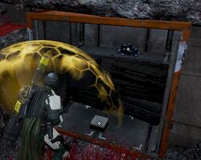
最多 Minor Places of Interests 特性 a 特殊 loot vessel. A Pod has space for 1, a Cargo 容器 has space for 2, and a Bunker has space for 3 with possible additional Supplies inside.
特殊 Loot may be one of the following:
- a 支援武器
- a pile of 10, or (rarely) 100 超级货币
- a slip 100, or (rarely)
 1000 申购点 Slips
1000 申购点 Slips - a case of 1-3
 Medals
Medals - one (1) single
 1 Rare Sample; collecting these additional "undocumented" specimens won't despawn or prevent collecting the pre-generated "wild" units. Thus one can 撤离 with E.G. 23/20 稀有样本; the latter number only indicates the amount of generated "floor"-units.
1 Rare Sample; collecting these additional "undocumented" specimens won't despawn or prevent collecting the pre-generated "wild" units. Thus one can 撤离 with E.G. 23/20 稀有样本; the latter number only indicates the amount of generated "floor"-units.
Rescue Pods
Pods can be opened by pressing the 互动-button and holding still for ~1-second after which the hatch will pop open; a standing 绝地潜兵 performs Casual Salute-emote. You can also salute from up to 5 meters away without interacting using the emote.
While pods are still closed, they emit a signal beam which can be observed from 11-metres and beyond; the further away a 绝地潜兵 is, the higher reaching is the beam. There is also pulse-sound emitted which can be faintly heard already from 65-meters away.
On 超级地球 Metropolis 生物群系-maps an additional Rescue Pod is placed within specific secondary 目标, E.G. Cognitive Disruptors 和 Radar Stations.
掩体
掩体 要求 two (2) coordinated 绝地潜兵 to open bay door by simultaneously pressing the unlock button.
Cargo Containers
Cargo containers can be breached open with anything performing 爆破 force of 20. The 伤害 can be directed on any part of the 容器 without need of hitting the door itself.
当前 list of 武器 that can open the 容器:
- 主武器:
- R-36 Eruptor
- CB-9 Exploding Crossbow
- AR/GL-21 One-Two (on 手榴弹 mode)
- 副武器:
- 投掷物
- 支援武器
- 外骨骼机甲
- EXO-45 爱国者 外骨骼机甲
- 火箭
- EXO-49 Emancipator 外骨骼机甲
- 自动加农炮
- EXO-51 Lumberer 外骨骼机甲
- 反坦克 Gun
- EXO-55 Breakthrough 外骨骼机甲
- Shield or 霰弹枪
- A stomp from any 外骨骼机甲 also opens the 容器
- EXO-45 爱国者 外骨骼机甲
- 其他
- B-100 Portable Hellbomb
- 快速侦察载具
- Impact of the car at high 速度
- LIFT-182 Warp Pack
- Warping with destination 下一个 to the 容器
- A nearby 爆炸, such as from an 爆炸桶 or 战略配备
- 任何 绝地喷射舱, however aiming the 战略配备 beacon to land at the door is very 困难
类型
There are various 类型 of Minor Places of Interest.
Wild Minor Places of Interest
| 类型 | 图像 | Variation | 特殊 Loot 容器 | 物资 | 背景 Interactables | 备注 |
|---|---|---|---|---|---|---|
| Damaged Hellbomb | 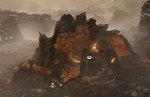 |
强袭虫 (终结族 planets only) | No | * 0-1 支援武器 | Words Scribbled on Bomb | The damaged NUX-223 Hellbomb will 引爆 when shot otherwise damaged. Will 引爆 immediately when hit with strong enough weapon. |
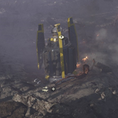 |
绝地潜兵 | |||||
| Graves | 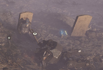 |
不适用 | No | * 0-1 弹药箱 * 0-3 常见样本 |
Communications Device | |
| Burial Grounds | 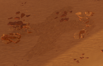 |
不适用 | No | * 0-1 CQC-72 Entrenchment Tool * 0-3 常见样本 * 0-1 稀有样本 |
None | Rarely, the burial grounds will be completely devoid of Samples. |
| Ground Stash | 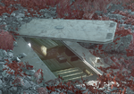 |
Empty | No | Nothing | Hastily Written Note | |
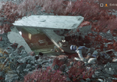 |
Empty + Corpse | Nothing | ||||
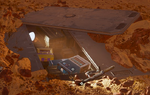 |
Stim + Grenades + Weapon | * 2 Stim Crates * 1 手榴弹 Case * 1 支援武器 |
None | |||
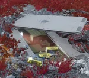 |
弹药 + Weapon | * 4 弹药箱 * 1 支援武器 |
||||
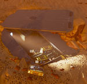 |
弹药 | * 4 弹药箱 | ||||
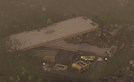 |
手榴弹 + 弹药 + Weapon | * 2 手榴弹 Cases * 1 弹药箱 * 1 支援武器 1 Entrenchment Tool |
||||
| Uranium Rock | Standalone | No | * 0-7 超级样本 | None | ||
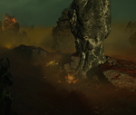 |
Connected Pit | * 0-7 超级样本 * 0-2 弹药箱 * 0-1 Stim Crates * 0-1 手榴弹 Case * 0-1 支援武器 |
Communications Device | |||
| Dugout House | 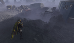 |
货物集装箱 | 是 | * 0-2 常见样本 | None | An extra variation adds 1-3 支援武器, regardless if there's a mine or a cargo 容器 present There are also 2 Exploding Barrels in the back dugout. |
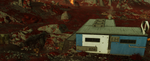 |
矿场 | No | * 0-3 稀有样本 * 0-2 常见样本 | |||
| 高处 House | 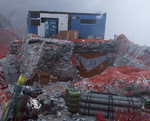 |
货物集装箱 | 是 | * 0-3 弹药箱 * 0-2 Stim Crates * 0-1 手榴弹 Case * 0-2 常见样本 * 0-1 Break-Action 霰弹枪 |
Vending Machine Communications Device |
An extra variation adds 1-3 支援武器, regardless if there's a mine or a cargo 容器 present |
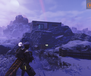 |
矿场 | No | * 0-3 弹药箱 * 0-2 Stim Crates * 0-1 手榴弹 Case * 0-2 常见样本 * 0-1 Break-Action 霰弹枪 * 0-3 稀有样本 | |||
| Solar Farm | 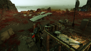 |
不适用 | 是 | * 4-5 弹药箱 * 3 Stim Crates * 0-3 常见样本 * 1-3 手榴弹 Case |
Case of "Democracy Drafts" Premium 轻型 Beer | |
| Destroyed House | 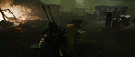 |
不适用 | 是 | * 5-9 弹药箱 * 0-1 Stim Crates * 0-3 常见样本 * 0-1 E/MG-101 重机枪部署支架 |
SEAF Communications Device Tool Rack |
On rare occasions the pod will be replaced by a damaged NUX-223 Hellbomb, which will 爆炸 if shot |
| L Shaped House | 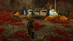 |
不适用 | 是 | * 1-3 弹药箱 * 0-1 Stim Crates * 0-1 手榴弹 Case * 0-2 常见样本 * 0-1 CQC-72 Entrenchment Tool |
Communications Device Vending Machine |
|
| Greenhouse | 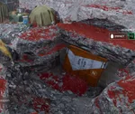 |
货物集装箱 | 是 | * 2-3 弹药箱 * 1 Stim Crates * 0-1 手榴弹 Cases * 0-2 常见样本 |
Communications Device Greenhouse - 类型 203 |
|

|
矿场 | No | * 2-3 弹药箱 * 1 Stim Crates * 0-1 手榴弹 Cases * 0-2 常见样本 * 0-3 稀有样本 |
|||
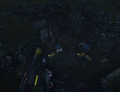 |
物资 | * 2-3 弹药箱 * 1 Stim Crates * 0-1 手榴弹 Cases * 0-2 常见样本 * 0-1 支援武器 |
||||
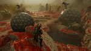 |
Flooded | * 2-3 弹药箱 * 1 Stim Crates * 0-1 手榴弹 Cases * 0-2 常见样本 |
||||
| Farm | 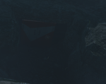 |
货物集装箱 | 是 | * 2-3 弹药箱 * 1 Stim Crates * 0-1 手榴弹 Cases * 0-2 常见样本 |
Communications Device | |
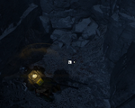 |
矿场 | No | * 2-3 弹药箱 * 1 Stim Crates * 0-1 手榴弹 Cases * 0-2 常见样本 * 0-3 稀有样本 |
|||
| 物资 | * 2-3 弹药箱 * 1 Stim Crates * 0-1 手榴弹 Cases * 0-2 常见样本 |
|||||
|
|
Flooded | * 2-3 弹药箱 * 1 Stim Crates * 0-1 手榴弹 Cases * 0-2 常见样本 |
||||
| Corn Farm | 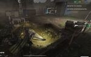 |
不适用 | 是 | Nothing | Welcome Sign - Homely 变体 02 | |
| Crashed Ship | 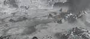 |
是 | * 0-2 弹药箱 * 0-2 Stim Crates * 0-1 手榴弹 Cases * 0-3 常见样本 |
机器人 遗骸 上尉's Log Communications Device |
||
| Junkyard | 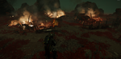 |
No | * 4 弹药箱 * 1 手榴弹 Cases *0-3 常见样本 *0-1 稀有样本 |
Case of "Democracy Drafts" Premium 轻型 Beer
上尉's Log |
||
| Bunker | 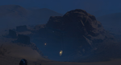 |
小型 Ditch | 是 | * 0-1 弹药箱 *0-2 Stim Crates *0-1 手榴弹 Cases *0-2 常见样本 |
Blood-Stained 图书馆 Card Forklift |
Rarely, the bunker will be collapsed/destroyed |
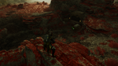 |
中型 Ditch | *0-2 弹药箱 *0-1 Stim Crates *0-2 常见样本 |
Communications Device | |||
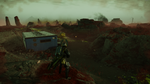 |
Large Ditch with House | * 0-1 手榴弹 Cases * 0-2 常见样本 |
? | |||
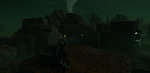 |
高处 | * 0-2 弹药箱 *0-1 手榴弹 Cases |
Tool Rack Forklift |
|||
|
|
高处 No House |
* 0-2 弹药箱 *0-1 Stim Crates *0-1 手榴弹 Cases *0-2 常见样本 |
Communications Device | |||
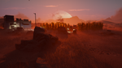 |
Cornfield | * 0-4 常见样本 * 1 CQC-72 Entrenchment Tool |
Tool Rack | |||
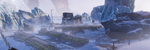 |
Greenhouse | * 0-1 普通样本 * 1 CQC-72 Entrenchment Tool * 0-2 弹药箱 * 0-1 手榴弹 Cases |
Greenhouse - 类型 203 Personal Device Welcome Sign - Homely 变体 02 |
|||
| 地下 Cache | 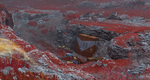 |
货物集装箱 | 是 | * 4-7 弹药箱 * 1-2 Stim Crates * 1-2 手榴弹 Cases * 0-3 常见样本 |
Handwritten Note | |
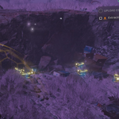 |
矿场 | No | * 4-7 弹药箱 * 1-2 Stim Crates * 1-2 手榴弹 Cases * 0-3 常见样本 * 0-3 稀有样本 |
Handwritten Note | ||
| Entrenchment | 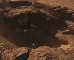 |
货物集装箱 | 是 | * 4-6 弹药箱 * 2 Stim Crates * 2-3 手榴弹 Cases * 0-3 常见样本 |
Communications Device | |
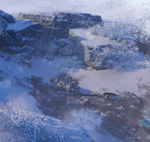 |
矿场 | No | * 4-6 弹药箱 * 2 Stim Crates * 2-3 手榴弹 Cases * 0-3 常见样本 * 0-4 稀有样本 |
|||
| Sinkhole | 不适用 | 是 | * 0-3 弹药箱 * 0-1 Stim Crates |
? | ||
| Valley | 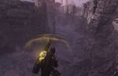 |
不适用 | 是 | * 0-1 手榴弹 Cases * 0-1 Break-Action 霰弹枪 |
? | |
| 载具 Repair Shop | 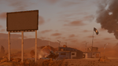 |
不适用 | 是 | * 3 弹药箱 * 2 Stim Crates * 1 手榴弹 Case * 0-2 常见样本 * 0-3 稀有样本 |
Vending Machine | 稀有样本 are always in the rubble that has the 火焰. |
| Crashed SEAF Bomber | 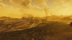 |
不适用 | 是 | * 6 弹药箱 * 3 手榴弹 Cases |
Vending Machine SEAF Communications Device |
The largest Minor Place of Interest, and the rarest. |
| Abandoned Outpost | 不适用 | 是 | * 6 弹药箱 * 2 手榴弹 Cases * 1 CQC-72 Entrenchment Tool |
Communications Device 超级地球 issued Tool Rack |
||
| 陨石坑 | 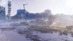 |
不适用 | 是 | * 3 弹药箱 * 2 手榴弹 Cases * 2 Stim Crates |
SEAF Communications Device | The full place of interest features 13 Exploding Barrels in it's 基本信息 area. |
| 山 Cache | 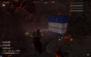 |
是 | * 0-3 Stim Crates * 0-6 弹药 Crates |
None | Only found on Magma Desert 星球 | |
| Bone Pillars | 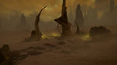 |
不适用 | 是 | * 3 特殊 Loot Stacks | None |
|
| Bug Mine Overgrowth | 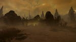 |
特殊 Loot | 是 | * 2 特殊 Loot Stacks | None |
|
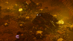 |
物资 | No | * 2 手榴弹 Cases * 4 弹药箱 * 1 支援武器 | |||
| 鹈鹕 Overgrowth | 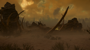 |
不适用 | 是 | Nothing | None | Only found on Hive World planets. |
| Ribcage Overgrowth | 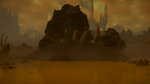 |
不适用 | 是 | * 1 特殊 Loot Stack * 0-2 手榴弹 Cases * 0-4 弹药箱 |
None |
|
| 终结族 Growth Crossing | 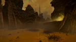 |
不适用 | 是 | * 1 特殊 Loot Stack * 0-3 弹药箱 |
None |
|
| 终结族 Growth Hill | File:终结族 Growth Hill POI.png | 不适用 | No | * 5 弹药箱 * 1 Stim Crate |
None |
|
| 鹈鹕 Crashsite | 不适用 | 是 | * 3 特殊 Loot Stack * 3 弹药箱 * 2 常见样本 |
None |
| |
| Cave Outpost | 不适用 | 是 | * 2 特殊 Loot Stack * 2 弹药箱 * 2 Break-Action Shotguns |
None |
|
Colony Minor Places of Interest
Colonies will often have Minor Places of Interest that won't show up on the map or on the compass if they don't have a 特殊 Loot 容器 (or alternatively the 稀有样本 replacement), though they will still have Supplies present.
Note: When farming for 超级货币, Medals, or 申购点 Slips, make sure to look whether the Minor Point of Interest shows up as a Minor Point of Interest on the map, otherwise no 特殊 Loot can spawn.
| 类型 | 图像 | Variation | 特殊 Loot 容器 | 物资 | 背景 Interactables | 备注 |
|---|---|---|---|---|---|---|
| Checkpoint | Solo | No | * 3-4 弹药箱 * 1 Stim Crate * 0-1 手榴弹 Case * 0-2 常见样本 * 0-1 消耗性反坦克武器 * 0-1 机枪 |
None | A 燃烧 undrivable M-102 Fast 侦察 载具 can 有时 spawn | |
| 重机枪阵地 | * 3-4 弹药箱 * 1 Stim Crate * 0-1 手榴弹 Case * 0-2 常见样本 * 0-1 消耗性反坦克武器 * 0-1 机枪 * 1 E/MG-101 重机枪部署支架 | |||||
| Containers | 是 | * 0-2 弹药箱 * 0-1 常见样本 |
超级地球 issued Tool Rack | |||
| Roadside Supply Pod | Roadside | 是 | * 1-2 常见样本 | None | ||
| Defended Park | * 4 弹药箱 * 1 手榴弹 Case |
|||||
| Bunker | File:Bunker POI Colony.png | Flooded | 是 | * 0-1 手榴弹 Case * 0-2 常见样本 |
None | |
| 混凝土 Canal | 不适用 | 是 | Nothing | None | ||
| Colony Alleyway | 不适用 | No | * 4-5 稀有样本 | None | ||
| Colony 重新补给 Sites | Porch | No | * 6 弹药箱 * 1 Stim Crate * 1 EAT-17 消耗性反坦克武器 * 1 支援武器 |
None | While not being direct variations of each other, they are 基本上 the same: Some ammunition, some stims/grenades and at least one 支援武器. | |
| Sidewalk (Wide) | * 4 弹药箱 * 1 手榴弹 Case * 0-2 常见样本 * 2 EAT-17 消耗性反坦克武器 | |||||
| Sidewalk (Narrow) | * 3 弹药箱 * 1 普通样本 * 1 RS-422 磁轨炮 | |||||
| 燃烧 Convoy | 不适用 | No | * 3-4 超级样本 | None | ||
| 鹈鹕 Crashsite | 不适用 | No | * 6 超级样本 | None |
City Minor Places of Interest
| 类型 | 图像 | Variation | 特殊 Loot 容器 | 物资 | 背景 Interactables | 备注 |
|---|---|---|---|---|---|---|
| City 纪念馆 | Undamaged | No | * 0-4 超级样本 | None | 多个 Memorials may spawn in 每次任务 area | |
| Destroyed | ||||||
| Urban 机器人 Flag | File:Urban 机器人 Flag POI.png | 不适用 | No | * 3 超级样本 | None | Exclusively found in 机器人 controlled Metropolises
(Note, remove once image is added: The Urban 机器人 Flag refers to a large 机器人 flagpole with 超级样本 at the bottom) |
| 光能者 工事 | 不适用 | No | * 5 超级样本 * 6 弹药箱 * 2 手榴弹 Cases * 常见样本 * 1 EAT-17 消耗性反坦克武器 |
None | Exclusively found in 光能者 controlled Metropolises | |
| Metropolis Park 纪念馆 | File:Park 纪念馆 City POI.png | 不适用 | No | * 3 常见样本 * 4 弹药箱 * 0-1 支援武器 |
None | (Note, remove once image is added: unlike the city 纪念馆, this one is found in a park, it's 加固 and both statues are completely destroyed) |
| Lone Statue | 不适用 | No | * 2 弹药箱 * 1 支援武器 |
None | ||
| Porch Rescue Pod | File:Porch Rescue Pod City POI.png | 不适用 | 是 | * 1 Stim Crate * 5-6 弹药箱 * 0-1 支援武器 |
None | (Note, remove once image is added: the porch rescue pod refers to a rescue pod placed on the ground around some fencing) |
| Collapsed Entrance | File:Collapsed Entrance City POI.png | 不适用 | No | * 3 常见样本 | None | (Note, remove once image is added: The collapsed entrance refers to the ruined door/overhang of a city 建筑) |
武器 found in Minor Places of Interest
Some 武器 can be found in Minor Places of Interest, this is not 有限 to only 支援武器, but also in rare cases 主武器. 支援武器 will spawn separately to the Break-Action 霰弹枪 and the CQC-72 Entrenchment Tool.
Note that 武器 that also use a Backpack will not have their backpack present, and will not be able to be reloaded unless an external Backpack that matches the weapon is brought in.
- 支援武器
图集
- Sweeping for POIs with the 小地图 marker cursor.
- Spotting a POI with the compass and 小地图 marking cursor from 75-metres 距离.
- Ditto with the map zoomed in.
- Map before 雷达站 has been activated
- Map after 雷达站 is completed.
- 几个 faraway 特殊 Loot pods signaling their beam.
- Observe 特殊 loot pod beam further away being higher reaching than the one closer to the 绝地潜兵.
- Minor Place Of Interest 变体 of the 集装箱 platform. Notice the red coloured 特殊 loot 容器 left side behind the stairs.
- Ditto but 下一个 to the 特殊 loot 容器.
- The 位置 of the 普通样本 of the 集装箱 platform. Majority of times when this area is marked at mPOI a 特殊 loot 容器 also is placed on this point.